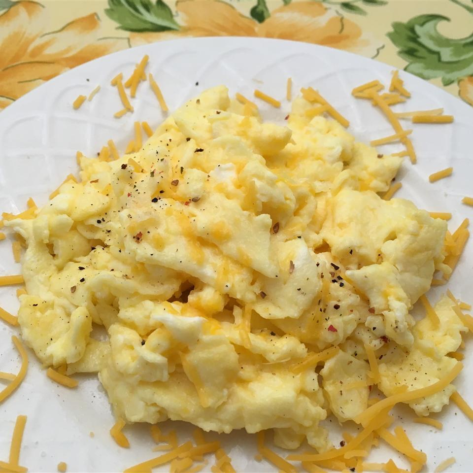

Ingredients
- 2 eggs
- 30 grams of cheddar cheese
- 2 thin slices of ham(optional)
- 1 teaspoon of heavy wipping cream
- 0.5 teaspoon of butter
Directions
- Whisk eggs together in a small bowl until smooth. Mix in Cheddar cheese, ham, and heavy cream.
- Melt butter in a skillet over medium heat. Pour in egg mixture; cook and stir until set but still moist, 3 to 5 minutes.